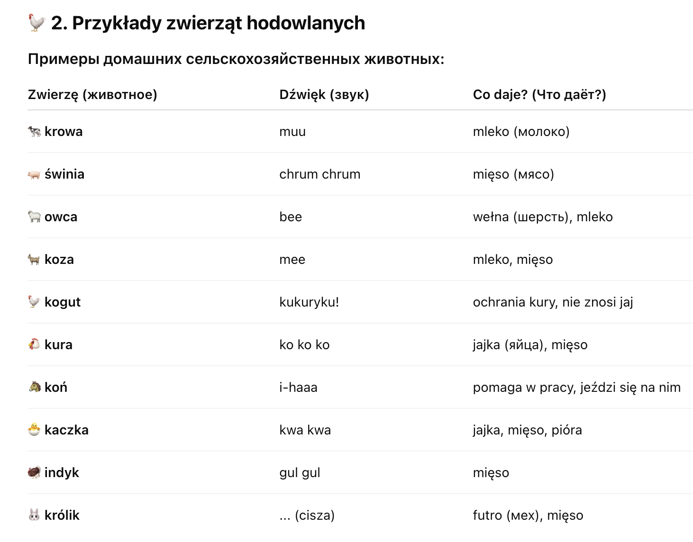

Przyroda > Świat zwierząt > Zwierzęta hodowlane
Świat zwierząt
🐄 Zwierzęta hodowlane
(Сельскохозяйственные / домашние животные)
🚜 1. Co to są zwierzęta hodowlane?
Что такое сельскохозяйственные животные?
Zwierzęta hodowlane — это животные, которых разводит человек на ферме (gospodarstwo).
Они приносят пользу: дают молоко, мясо, яйца, шерсть, помогают в хозяйстве.

-
🧒 3. Kto opiekuje się zwierzętami?
- Rolnik / rolniczka – фермер / фермерша
- Daje jedzenie i wodę – даёт еду и воду
- Sprząta – убирает
- Chroni – защищает
-
🏠 4. Gdzie mieszkają?
- obora – коровник
- chlew – свинарник
- kurnik – курятник
- stajnia – конюшня
- zagroda – загон
- gospodarstwo – ферма
-
🐦 Ptaki leśne (Лесные птицы):
- sowa – сова
- dzięcioł – дятел
- gołąb leśny – лесной голубь
- kukułka – кукушка